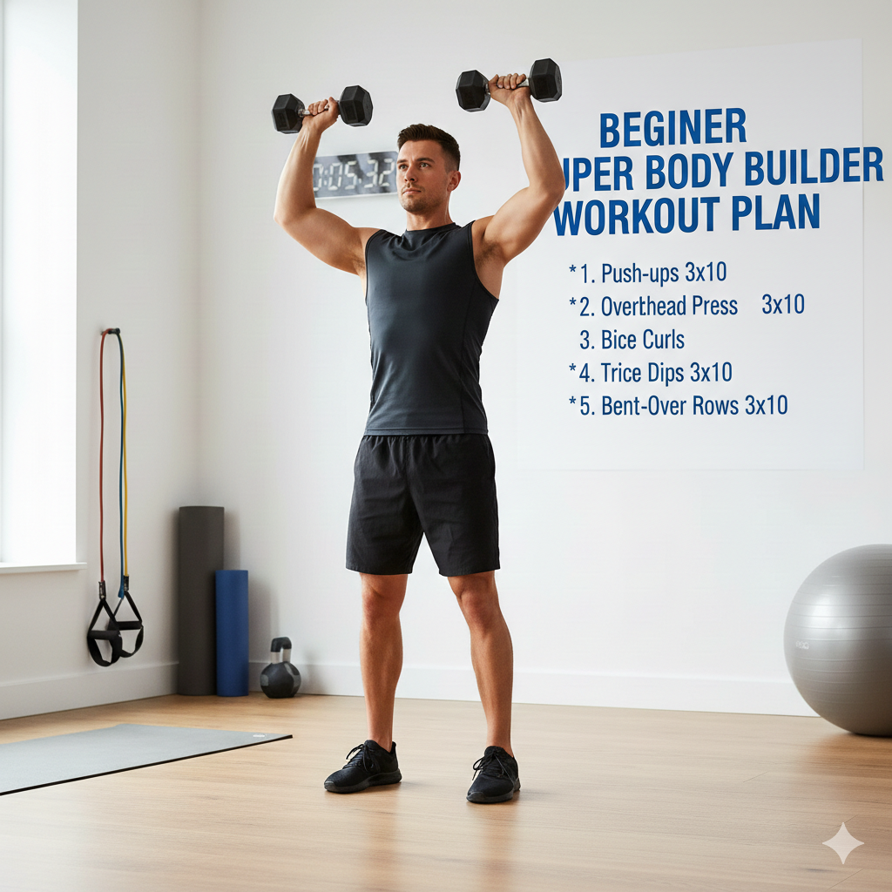
Beginner Upper Body Builder Workout Plan
A beginner-friendly upper body muscle-building routine consisting of five exercises
performed for 3 sets of 10 repetitions to develop strength and endurance.
Workout Routine
- Push Ups — 3×10
- Dumbbell Shoulder Press — 3×10
- Dumbbell Rows — 3×10
- Bicep Curls — 3×10
- Tricep Dips — 3×10
- Special: Do this 2× per week ensuring at least 48 hours rest between sessions for optimal recovery and muscle growth.
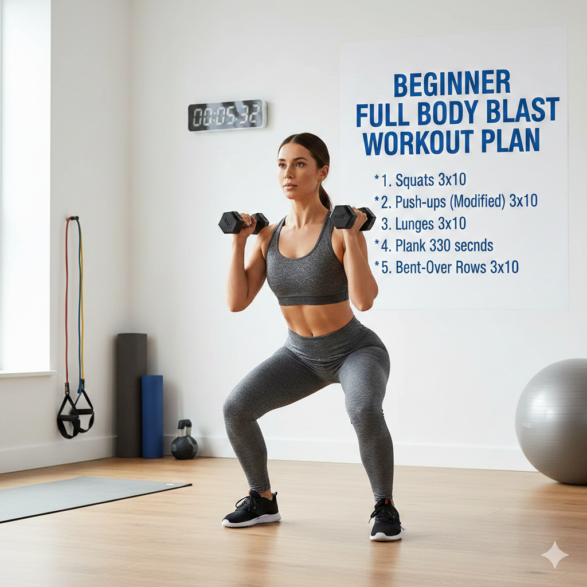
Beginner Full Body Blast Workout Plan
A beginner-friendly full-body workout routine designed to build overall strength and
endurance while engaging both upper and lower body muscles.
Workout Routine
- Squats — 3×10
- Push Ups — 3×10
- Bent Over Rows — 3×10
- Plank — 30 sec
- Jumping Jacks — 30 sec
- Special: Do this 2× per week ensuring at least 48 hours rest between sessions for optimal recovery and muscle growth.
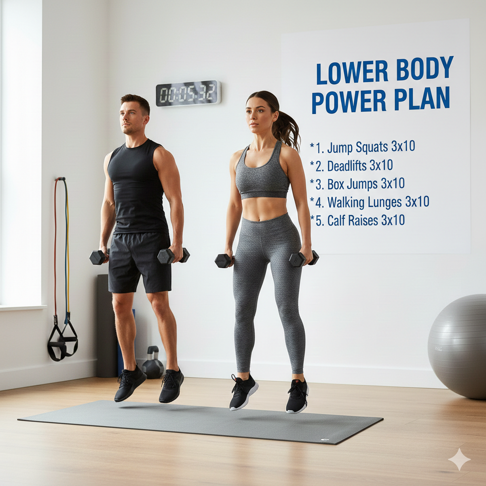
Lower Body Power Plan
A lower-body power routine consisting of explosive strength exercises designed to
improve leg power, balance, and athletic performance.
Workout Routine
- Jump Squats — 3×10
- Deadlifts — 3×10
- Box Jumps — 3×10
- Walking Lunges — 3×10
- Calf Raises — 3×10
- Special: Do this 2× per week ensuring at least 48 hours rest between sessions for optimal recovery and muscle growth.
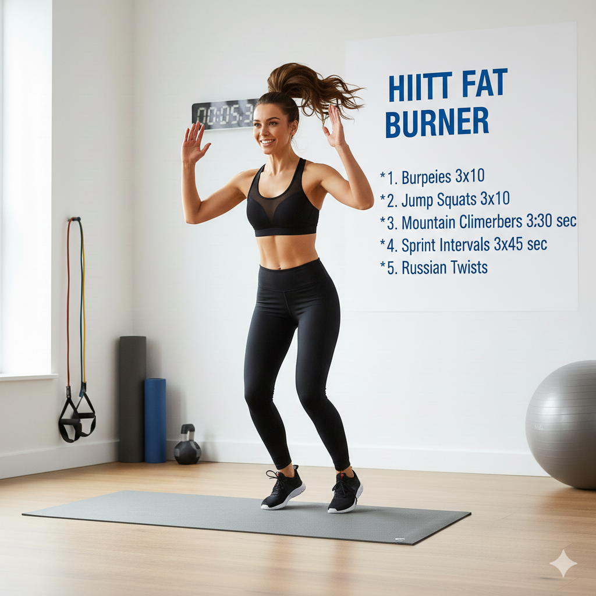
HIIT Fat Burner Workout Plan
A high-intensity interval training routine designed to maximize calorie burn and
improve cardiovascular endurance.
Workout Routine
- Burpees — 30 sec
- Mountain Climbers — 30 sec
- High Knees — 30 sec
- Jump Rope — 30 sec
- Rest — 30 sec
- Special: Do this 2× per week ensuring at least 48 hours rest between sessions for optimal recovery and muscle growth.
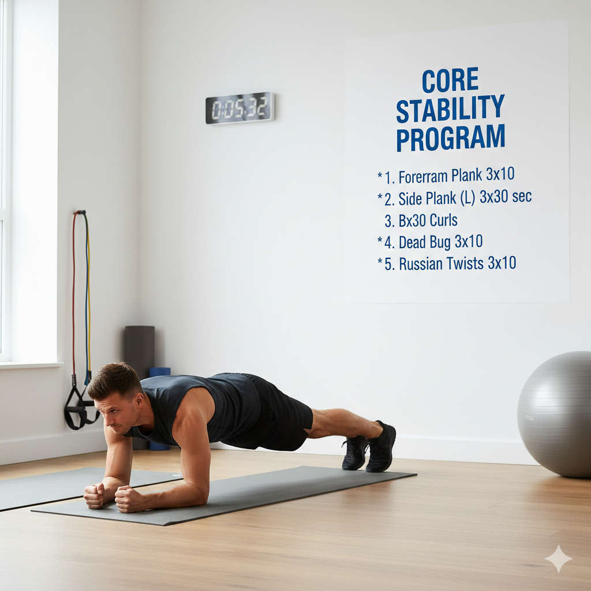
Core Stability Program
A core-focused routine designed to strengthen abdominal muscles, improve balance,
and
enhance overall stability.
Workout Routine
- Plank — 30 sec
- Russian Twists — 20 reps
- Leg Raises — 15 reps
- Dead Bug — 20 reps
- Bicycle Crunch — 20 reps
- Special: Do this 2× per week ensuring at least 48 hours rest between sessions for optimal recovery and muscle growth.
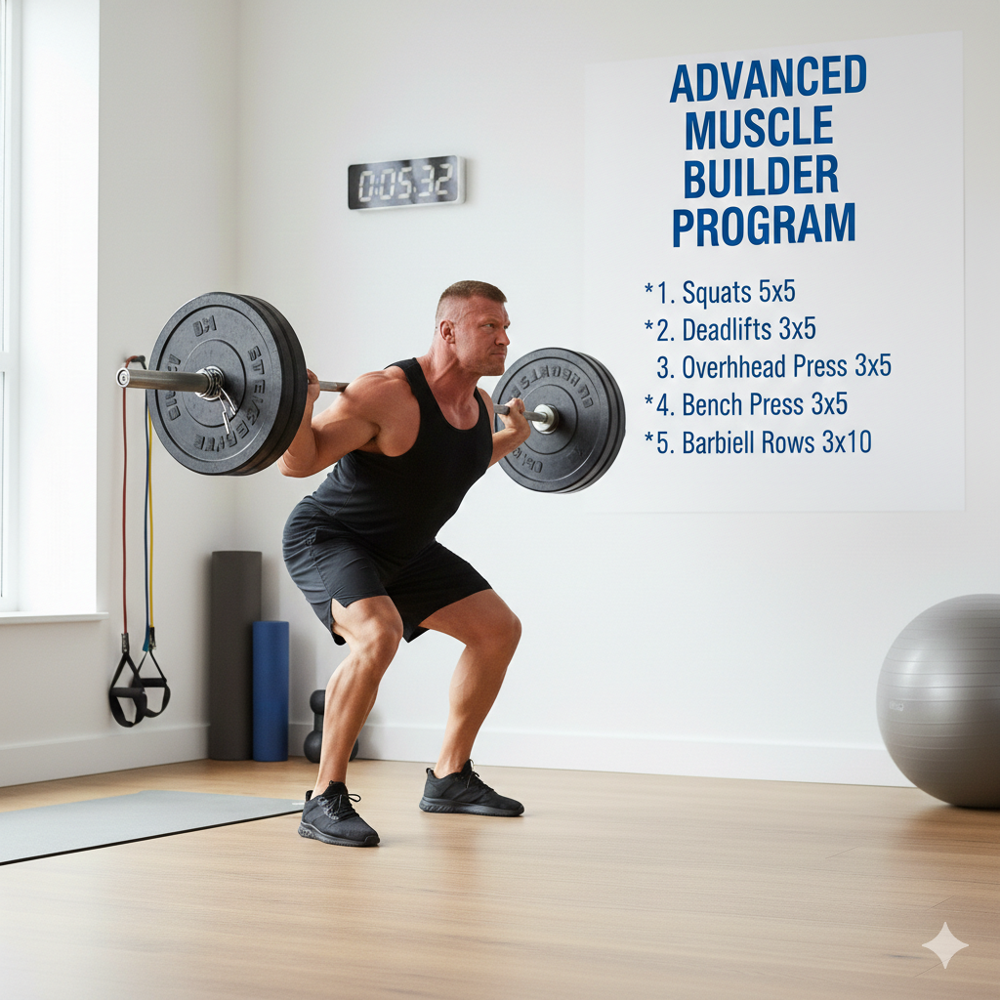
Advanced Muscle Builder Program
An advanced strength routine focused on heavy compound lifts to maximize muscle
growth
and total body strength.
Workout Routine
- Barbell Squats — 4×8
- Bench Press — 4×8
- Deadlifts — 4×8
- Pull Ups — 4×10
- Overhead Press — 4×8
- Special: Do this 2× per week ensuring at least 48 hours rest between sessions for optimal recovery and muscle growth.
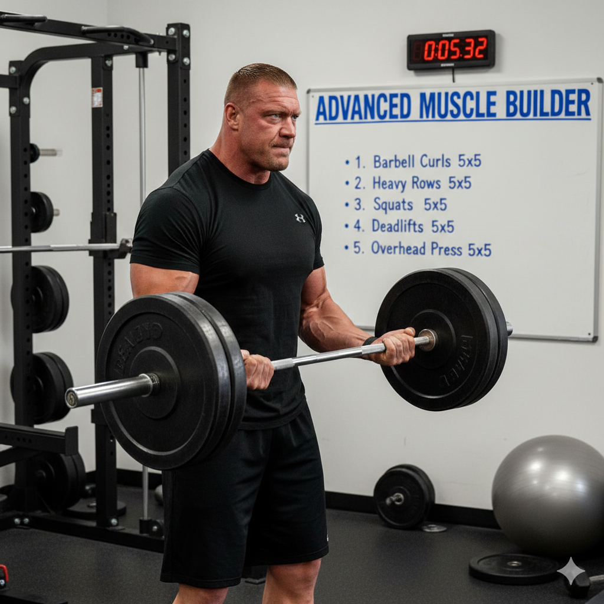
Advanced Muscle Builder
A challenging strength-focused routine combining heavy compound and isolation
exercises
for maximum muscle growth.
Workout Routine
- Heavy Squats — 4×6
- Incline Bench Press — 4×8
- Bent Over Rows — 4×8
- Dumbbell Shoulder Press — 4×10
- Barbell Curls — 4×10
- Special: Do this 2× per week ensuring at least 48 hours rest between sessions for optimal recovery and muscle growth.
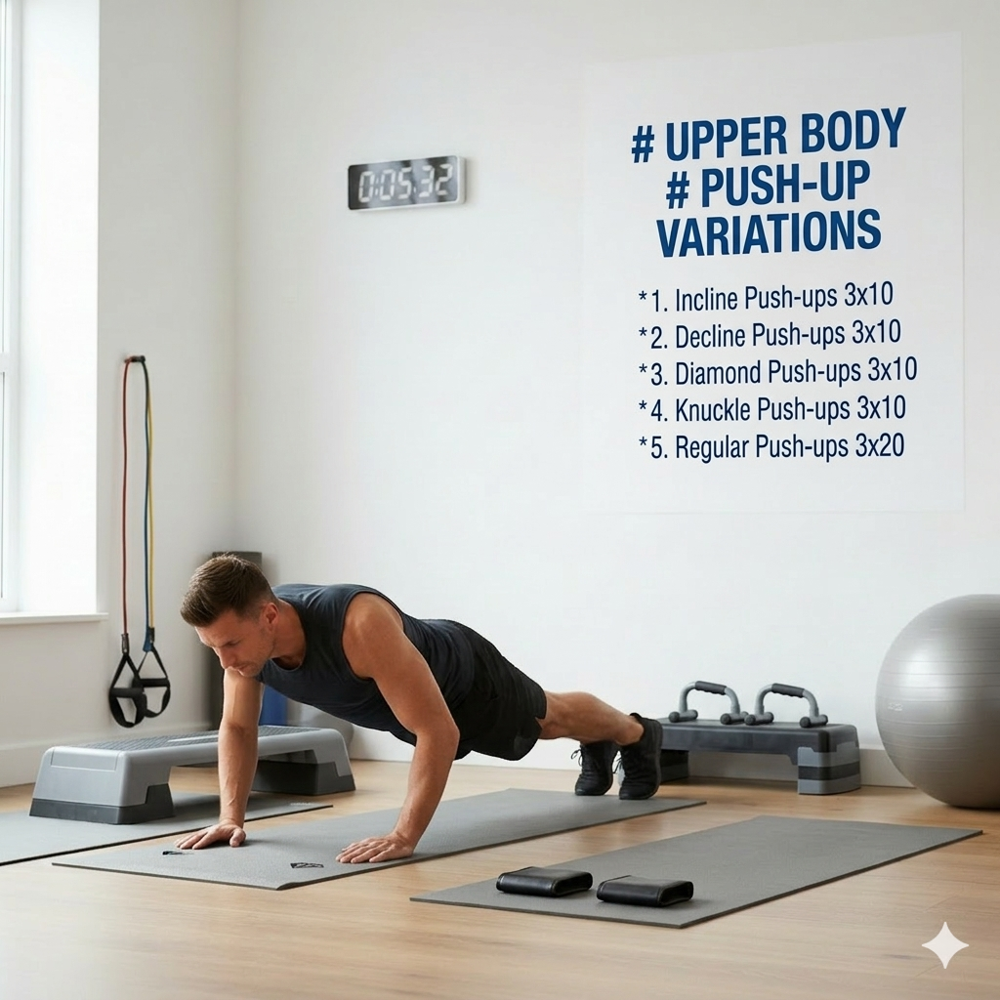
Upper Body Push-Up Variations
An upper-body routine featuring several push-up variations to improve chest,
shoulder,
and arm strength.
Workout Routine
- Standard Push Ups — 3x12
- Wide Push Ups — 3x10
- Diamond Push Ups — 3x8
- Decline Push Ups — 3x8
- Explosive Push Ups — 3x6
- Special: Do this 2× per week ensuring at least 48 hours rest between sessions for optimal recovery and muscle growth.
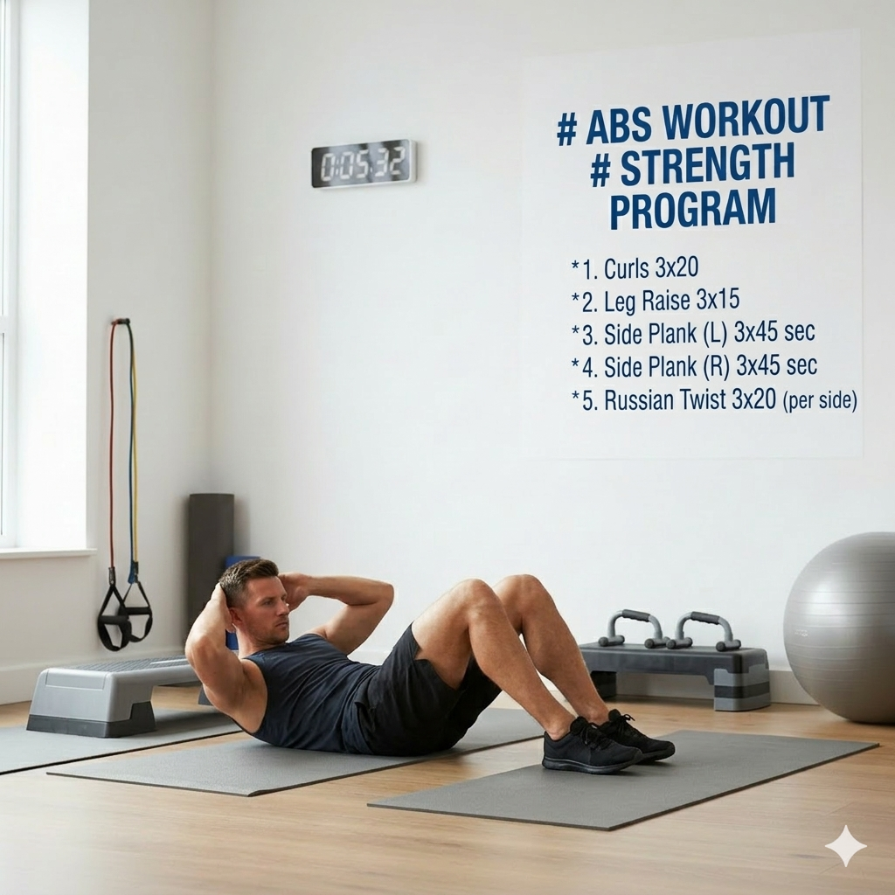
Abs Workout Strength Program
A core routine designed to strengthen abdominal muscles and improve stability and
endurance.
Workout Routine
- Sit Ups — 3×20
- Leg Raises — 3×15
- Russian Twists — 3×20
- Plank — 45 sec
- Special: Do this 2× per week ensuring at least 48 hours rest between sessions for optimal recovery and muscle growth.
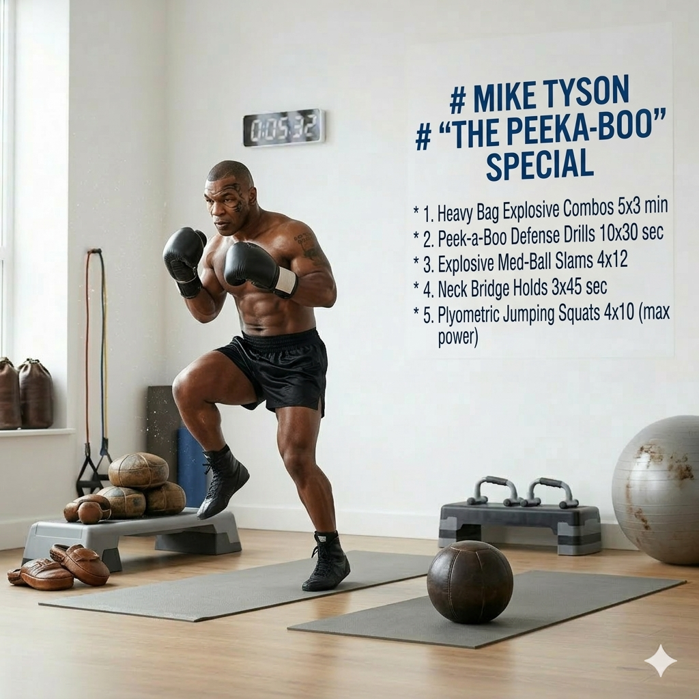
Mike Tyson Peek-a-Boo Special
A boxing-inspired training routine designed to develop explosive power, defensive
movement, and full-body athletic performance.
Workout Routine
- Neck Bridges — 3×15
- Slip Rope Drill — 3×1 min
- Shadow Boxing — 3×2 min
- Explosive Push Ups — 3×10
- Heavy Bag Work — 3×2 min
- Special: Do this 2× per week ensuring at least 48 hours rest between sessions for optimal recovery and muscle growth.
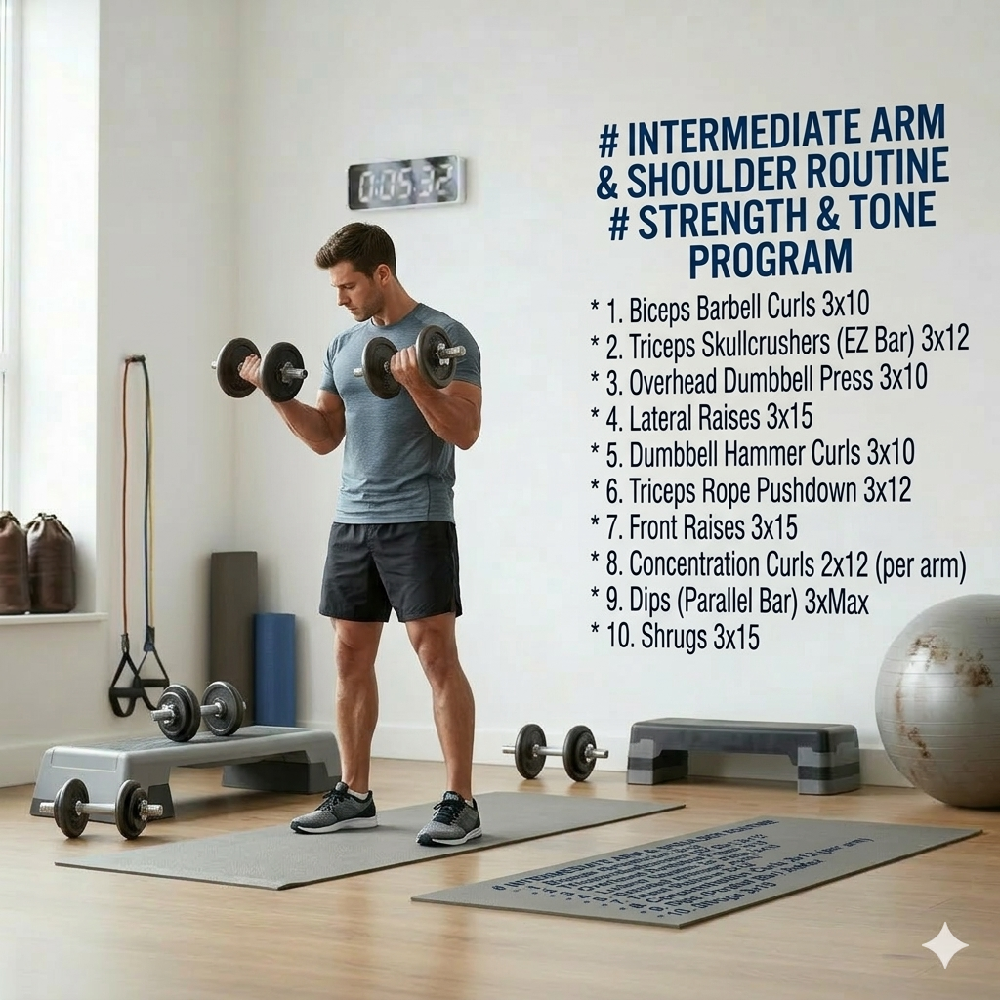
Intermediate Arm and Shoulder Routine
A targeted upper-body routine focused on building arm and shoulder strength, muscle
definition, and stability.
Workout Routine
- Dumbbell Shoulder Press — 4×10
- Lateral Raises — 3×12
- Hammer Curls — 3×10
- Tricep Extensions — 3×10
- Front Raises — 3×12
- Special: Do this 2× per week ensuring at least 48 hours rest between sessions for optimal recovery and muscle growth.
Intermediate Arm and Shoulder Routine
A focused upper-body routine targeting biceps, triceps, and shoulders for strength
and definition.
Workout Routine
- Biceps Barbell Curls — 4×10
- Triceps Skullcrushers — 3×12
- Overhead Dumbbell Press — 4×10
- Lateral Raises — 3×12
- Dumbbell Hammer Curls — 3×10
- Triceps Rope Pushdown — 3×12
- Special: Do this 2× per week ensuring at least 48 hours rest between sessions for optimal recovery and muscle growth.
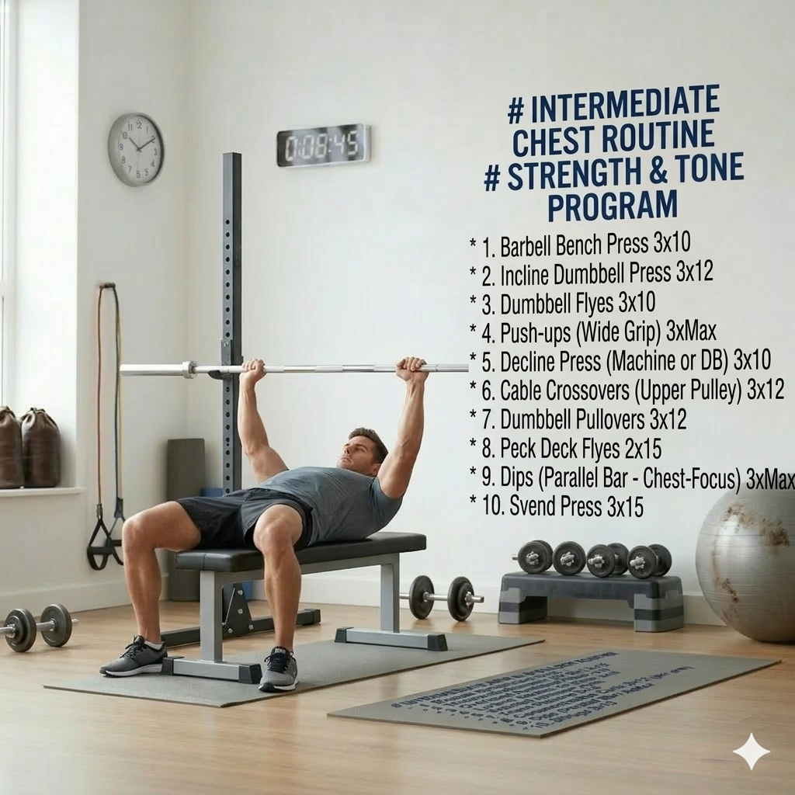
Intermediate Chest Routine
Build strength, size, and definition with a focused chest workout. Ideal for
intermediate lifters.
Workout Routine
- Barbell Bench Press — 4×10
- Incline Dumbbell Press — 4×10
- Dumbbell Flyes — 3×12
- Push-Ups — 3×15
- Decline Press — 3×10
- Cable Crossover — 3×12
- Dumbbell Pullover — 3×12
- Special:Do this 2× per week ensuring at least 48 hours rest between sessions for optimal recovery and muscle growth.
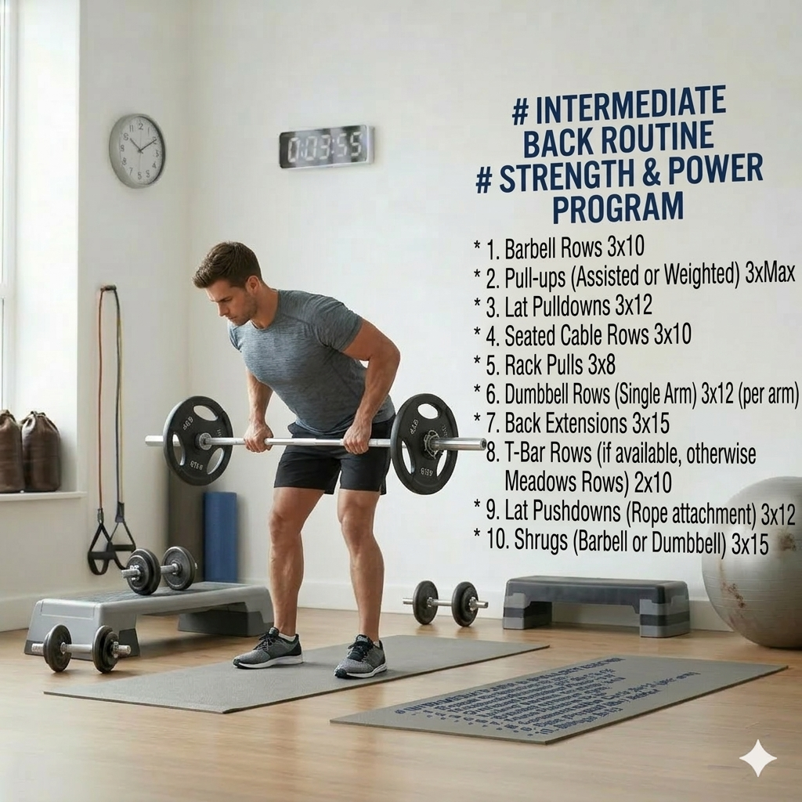
Intermediate Back Routine
Strengthen and sculpt your back with targeted intermediate exercises.
Workout Routine
- Barbell Rows — 4×10
- Pull-Ups — 3×Max
- Lat Pulldowns — 3×12
- Seated Cable Rows — 3×12
- Rack Pulls — 3×10
- Dumbbell Rows — 3×12
- Special: Do this 2× per week ensuring at least 48 hours rest between sessions for optimal recovery and muscle growth.
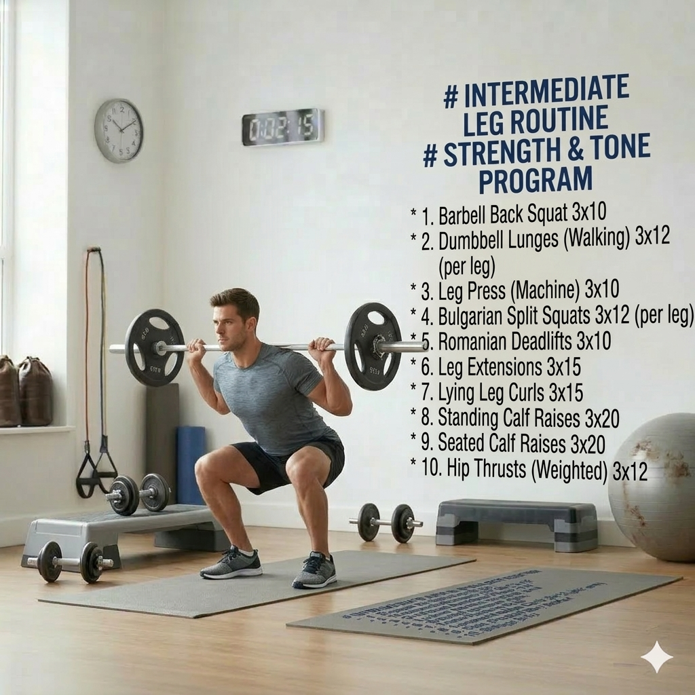
Intermediate Leg Routine
Build strength, power, and definition in your lower body with this focused leg
workout.
Workout Routine
- Barbell Back Squat — 4×10
- Dumbbell Lunges — 3×12 per leg
- Leg Press — 3×12
- Bulgarian Split Squat — 3×10 per leg
- Romanian Deadlift — 3×10
- Leg Extensions — 3×12
- Special: Do this 2× per week ensuring at least 48 hours rest between sessions for optimal recovery and muscle growth.
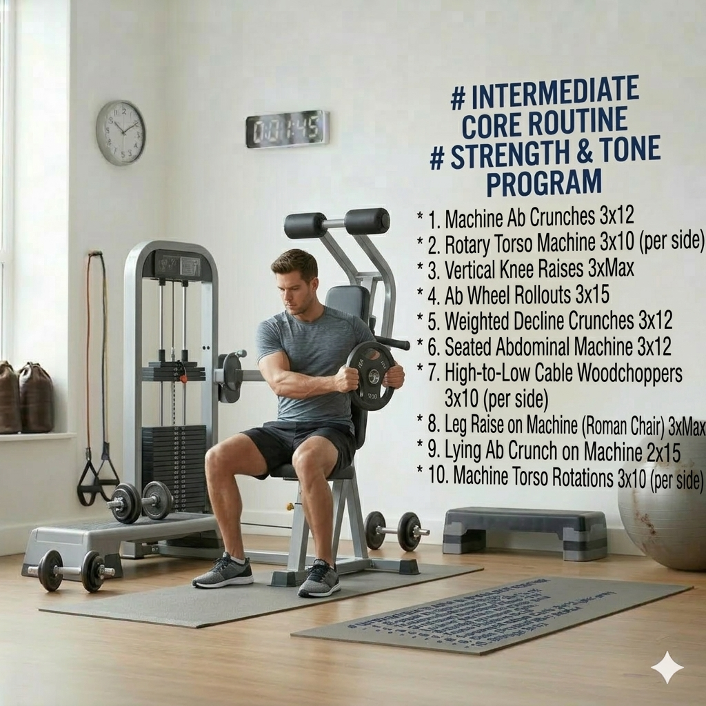
Intermediate Core Routine
Strengthen and define your abs and obliques with this focused core workout.
Workout Routine
- Machine Ab Crunches — 3×12
- Rotary Torso Machine — 3×12 per side
- Vertical Knee Raises — 3×12
- Ab Wheel Rollouts — 3×10
- Weighted Decline Crunches — 3×15
- Leg Raises on Machine — 3×12
- Special: Do this 2× per week ensuring at least 48 hours rest between sessions for optimal recovery and core development.
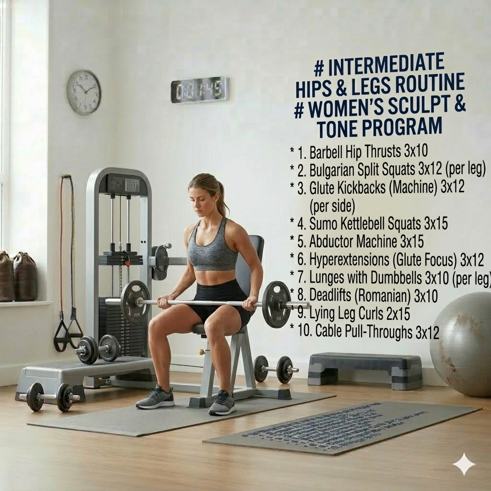
Intermediate Hips & Legs Routine (Women)
Focus on glutes, hips, and legs with this targeted intermediate workout.
Workout Routine
- Barbell Hip Thrusts — 4×12
- Bulgarian Split Squats — 3×12 per leg
- Glute Kickbacks — 3×15 per leg
- Sumo Kettlebell Squats — 3×12
- Abductor Machine — 3×15
- Deadlift — 3×10
- Special: Do this 2× per week with at least 48 hours rest for optimal glute and leg development.
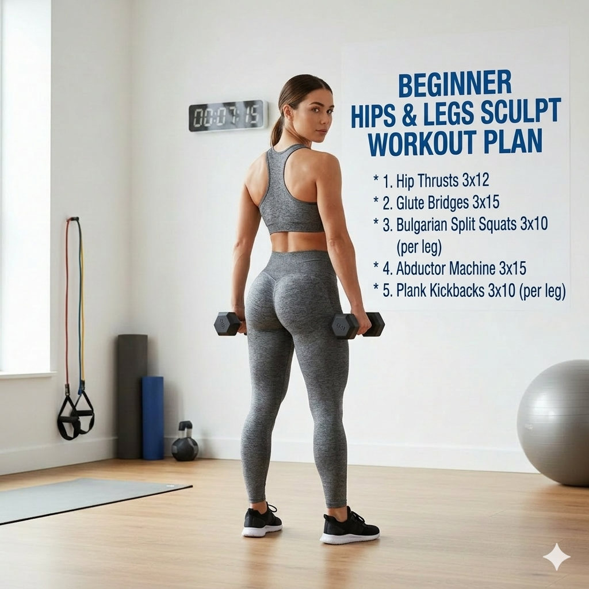
Beginner Hips & Legs Routine (Women)
Build foundational strength in your glutes, hips, and legs with this
beginner-friendly workout.
Workout Routine
- Hip Thrusts — 3×12
- Glute Bridges — 3×15
- Bulgarian Split Squats — 3×10 per leg
- Abductor Machine — 3×12
- Plank Kickbacks — 3×12 per leg
- Special: Do this 2× per week to establish strong hips and legs safely.
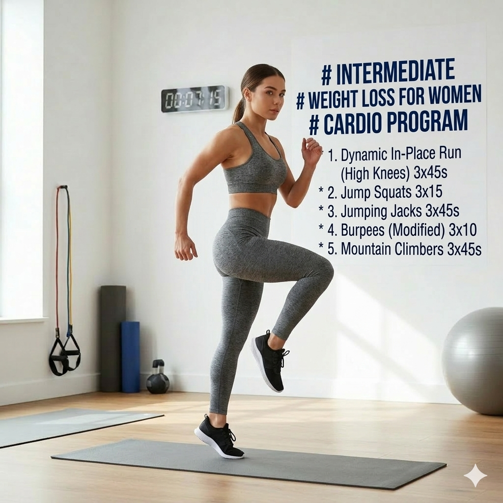
Intermediate Weight Loss Cardio (Women)
Boost calorie burn and endurance with this dynamic cardio-focused routine.
Workout Routine
- Dynamic In-Place Run — 3×60 sec
- Jump Squats — 3×15
- Jumping Jacks — 3×30
- Burpees — 3×12
- Mountain Climbers — 3×30 sec
- Special: Perform this 2× per week for optimal fat burning and endurance.
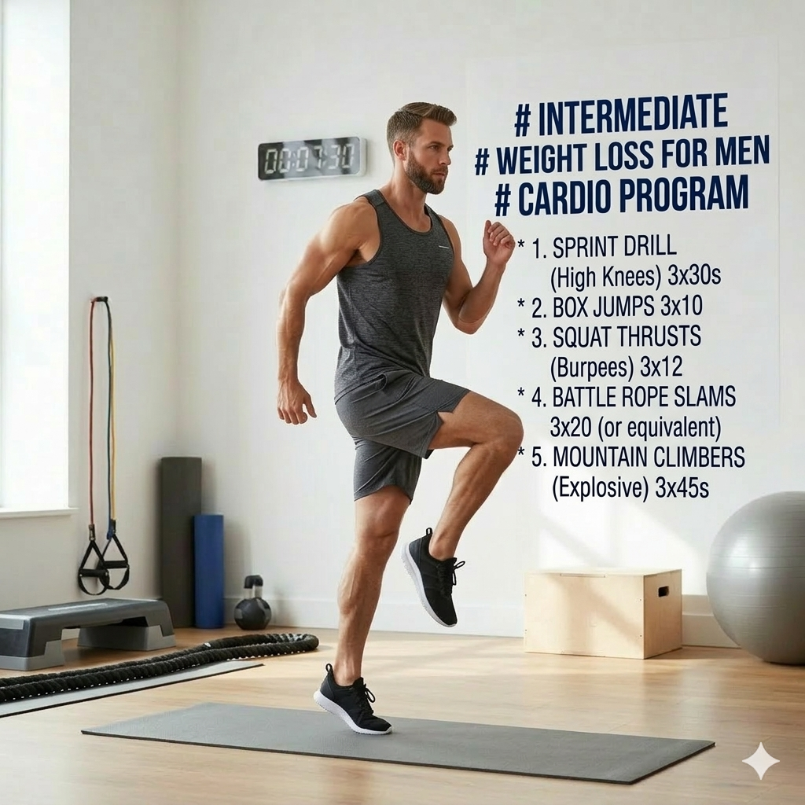
Intermediate Cardio (Men)
High-intensity exercises to improve endurance, explosiveness, and overall
conditioning.
Workout Routine
- Sprint Drills — 4×30 sec
- Box Jumps — 3×12
- Squat Thrusts — 3×15
- Battle Rope — 3×30 sec
- Slams — 3×12
- Mountain Climbers — 3×30 sec
- Special: Perform this 2× per week to maximize cardiovascular gains and explosive power.
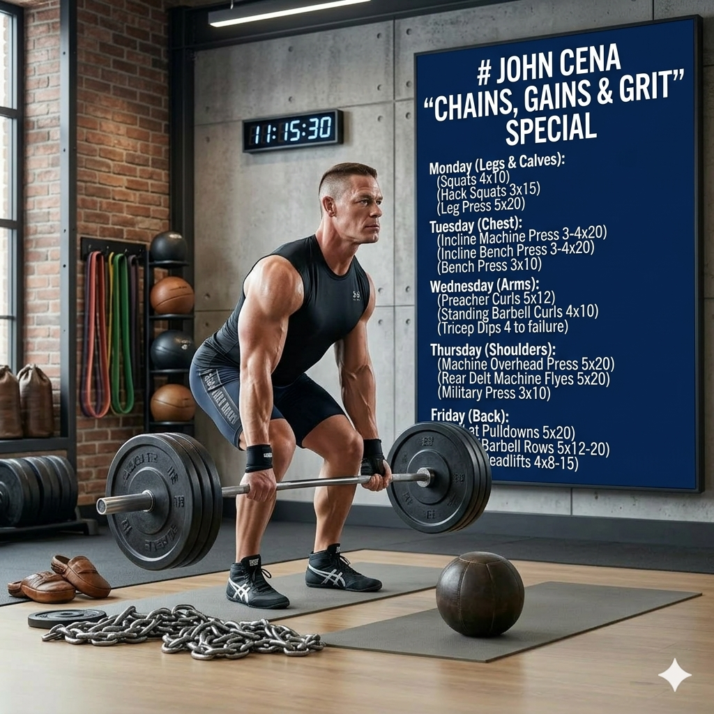
John Cena – Never Give Up Special
A weekly full-body strength and power routine inspired by John Cena’s mindset and
training.
Weekly Workout Plan
- Monday: Squats, Leg Press
- Tuesday: Bench Press, Incline Machine Press
- Wednesday: Preacher Curls, Tricep Dips
- Thursday: Overhead Press, biceps curls
- Friday: Deadlift, barbell rows
- Special: Push yourself 2× per week on any two days to challenge your limits while allowing adequate rest.
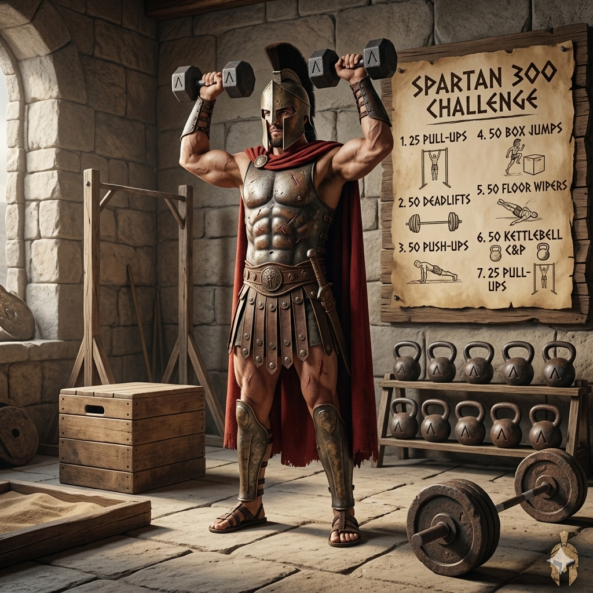
Spartan 300 Challenge
An intense intermediate strength challenge inspired by Spartan-style training.
Workout Routine
- Pull-Ups — 25
- Box Jumps — 50
- Deadlifts — 50
- Floor Wipers — 50
- Push-Ups — 50
- Kettlebell Swings — 50
- Pull-Ups — 25
- Special: Complete all exercises in one session for the full 300 challenge.
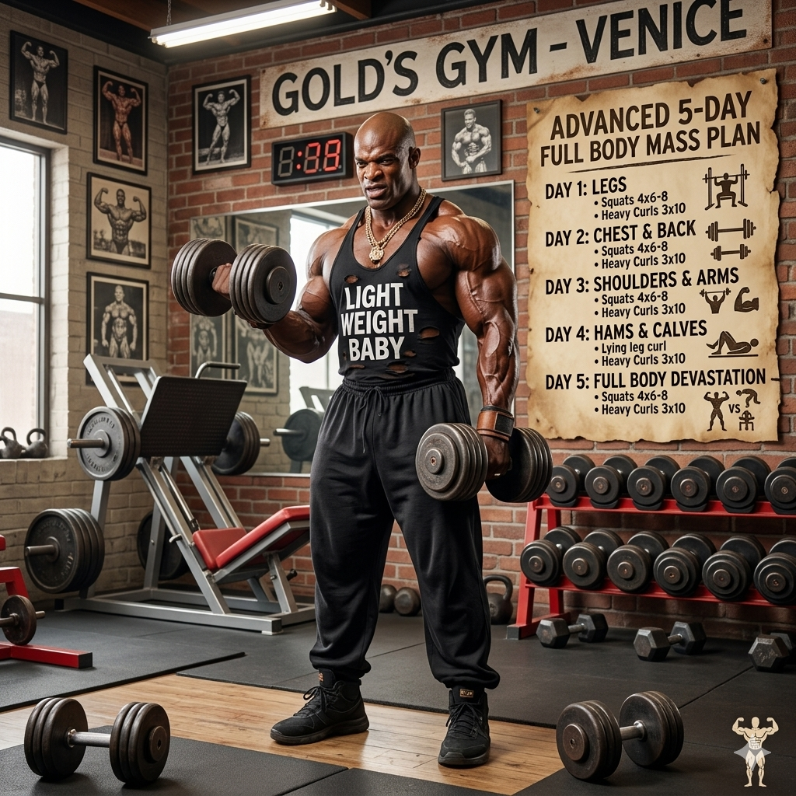
Ronnie Coleman – Light Weight Baby!
Advanced 5-day mass-building program inspired by legendary bodybuilding intensity.
5-Day Mass Plan
- Day 1 – Legs: Heavy Squats, Leg Curls
- Day 2 – Chest & Back: Bench Press, Barbell Rows
- Day 3 – Shoulders & Arms: Overhead Press, Barbell Curls
- Day 4 – Hamstrings & Calves: Romanian Deadlift, Standing Calf Raises
- Day 5 – Full Body: Deadlifts, Pull-Ups
- Special: Train heavy, rest well, and focus on proper form for maximum muscle growth.
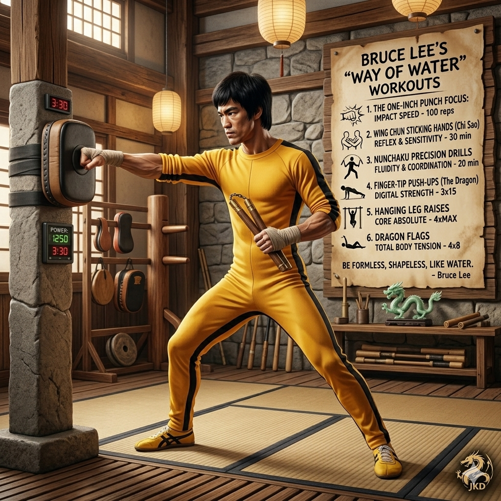
Bruce Lee – Way of Water
A martial arts inspired routine focusing on speed, control, and explosive power.
Workout Routine
- One Inch Punch Focus Drills — 3×10
- Wing Chun Sticking Hands (Chi Sao) — 10 min practice
- Nunchaku Drills — 10 min practice
- Fingertip Push-Ups — 3×12
- Hanging Leg Raises — 3×15
- Dragon Flags — 3×10
- Special: Train with control, speed, and balance — “Be water, my friend.”
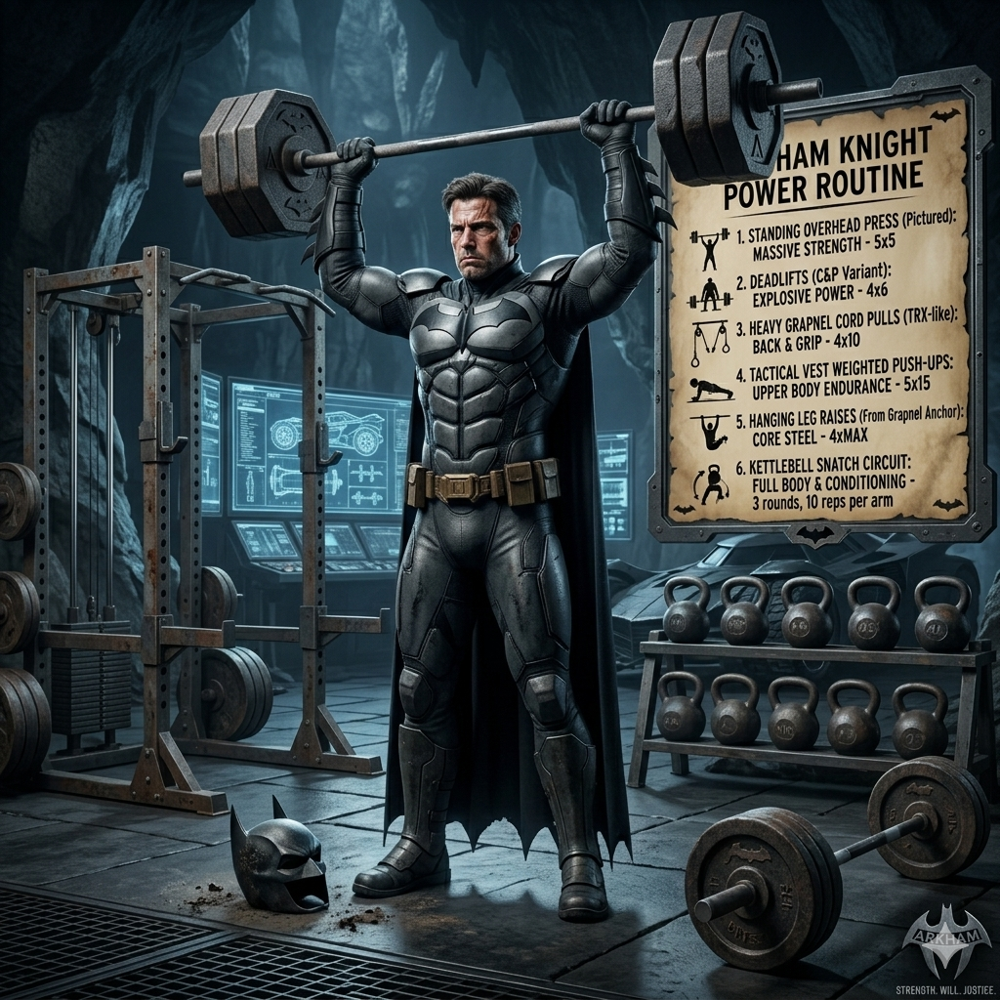
Arkham Knight Power Routine
A high-intensity strength and tactical conditioning program inspired by the combat
training
and physical discipline of Gotham’s legendary vigilante.
Workout Routine
- Standing Overhead Press — 4×8
- Deadlifts — 4×6
- Heavy Grapnel Cord Pulls — 3×10
- Tactical Vest Weighted Push-Ups — 3×15
- Hanging Leg Raises — 3×15
- Kettlebell Snatch Circuit — 3×12 per arm
- Special: Perform 2–3× per week to build elite strength, endurance, and tactical conditioning.
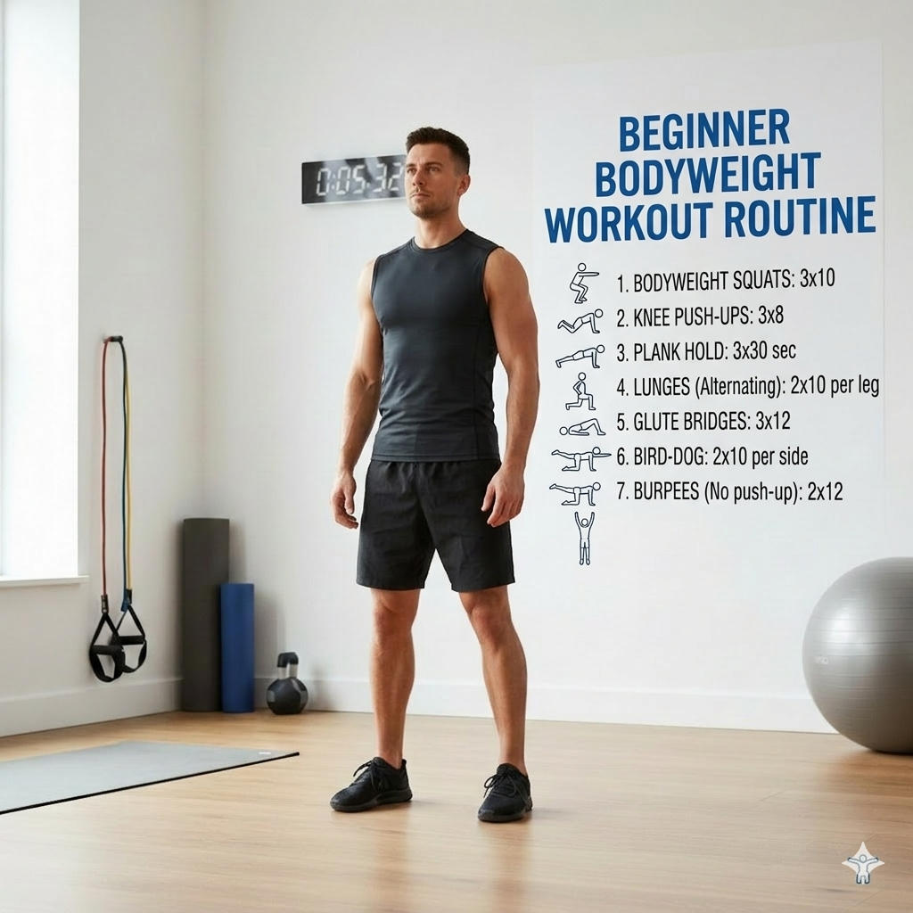
Beginner Bodyweight Workout
A simple full-body routine using only bodyweight exercises to build strength and
mobility.
Workout Routine
- Bodyweight Squats — 3×12
- Knee Push-Ups — 3×10
- Plank — 3×30 sec
- Lunges — 3×10 per leg
- Glute Bridges — 3×12
- Bird Dog — 3×10 per side
- Burpees — 3×8
- Special: Perform 2–3× per week to build a strong fitness foundation.
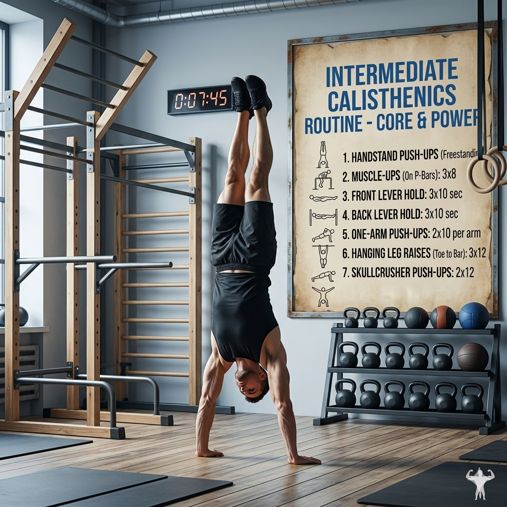
Intermediate Calisthenics Core Routine
A challenging bodyweight routine focused on core stability, upper-body strength,
and advanced calisthenics control.
Workout Routine
- Handstand Push-Ups — 4×6
- Muscle-Ups — 4×5
- Front Lever Hold — 3×15 sec
- Back Lever Hold — 3×15 sec
- One-Arm Push-Ups — 3×5 per arm
- Hanging Leg Raises — 3×15
- Skullcrusher Push-Ups — 3×10
- Special: Perform 2× per week focusing on control, balance, and strict form.
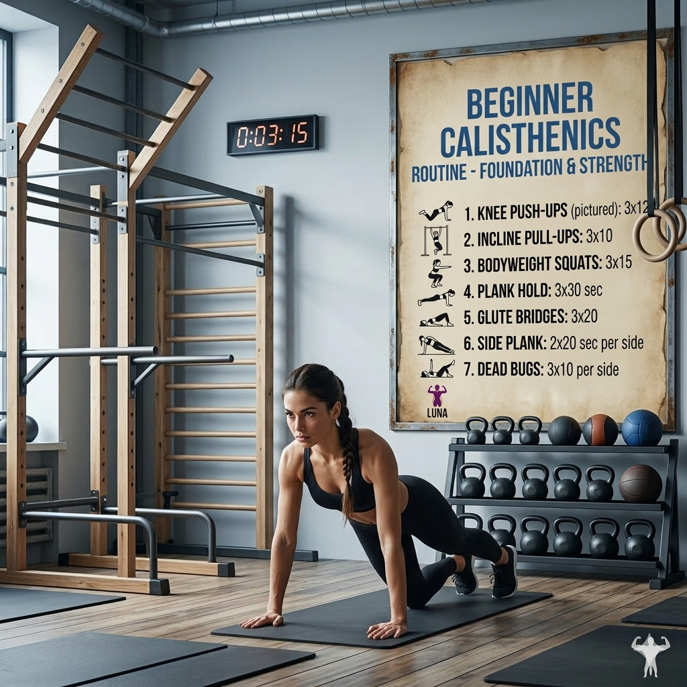
Beginner Calisthenics Routine (Women)
A gentle bodyweight routine designed to build strength, stability, and core control.
Workout Routine
- Knee Push-Ups / Incline Push-Ups — 3×10
- Bodyweight Squats — 3×12
- Plank Hold — 3×30 sec
- Glute Bridges — 3×12
- Side Plank — 3×20 sec per side
- Dead Bugs — 3×10 per side
- Special: Perform 2–3× per week to build strength and body control.
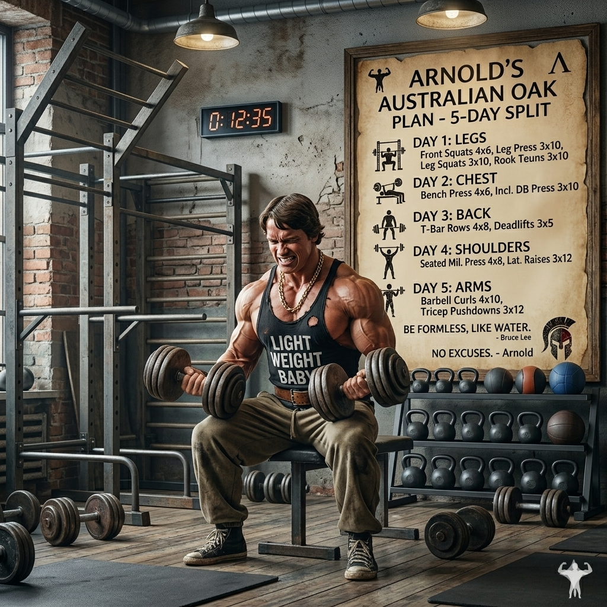
Arnold's Austrian Oak Plan
A classic bodybuilding split inspired by the legendary training style of Arnold
Schwarzenegger.
5-Day Training Plan
- Day 1 – Legs: Barbell Squats, Leg Press
- Day 2 – Chest: Barbell Bench Press, Incline Dumbbell Press
- Day 3 – Back: Pull-Ups, Barbell Rows
- Day 4 – Shoulders: Overhead Press, Lateral Raises
- Day 5 – Arms: Barbell Curls, Tricep Dips
- Special: Follow the full 5-day split each week with proper rest and nutrition.
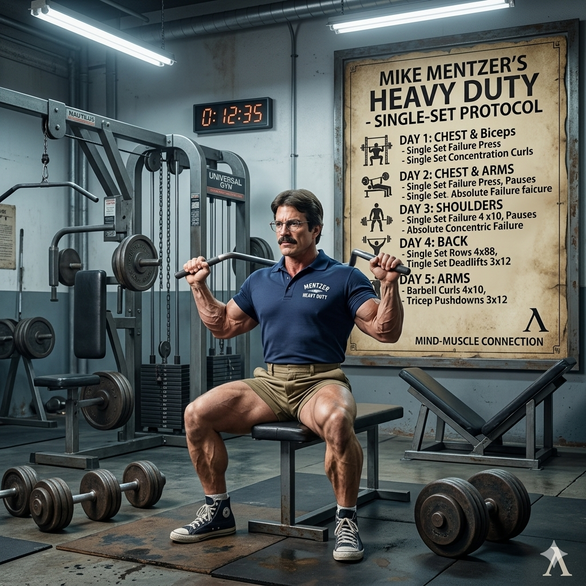
Mike Mentzer – Heavy Duty Protocol
An advanced high-intensity training method focused on maximum effort and minimal
volume.
Heavy Duty Split
- Day 1 – Chest & Biceps: Incline Barbell Press, Barbell Curls
- Day 2 – Chest & Arms: Dumbbell Flyes, Tricep Dips
- Day 3 – Shoulders: Overhead Press, Lateral Raises
- Day 4 – Back: Deadlifts, Lat Pulldowns
- Day 5 – Arms: Preacher Curls, Skullcrushers
- Special: Perform one intense working set to failure for each exercise with full recovery between sessions.
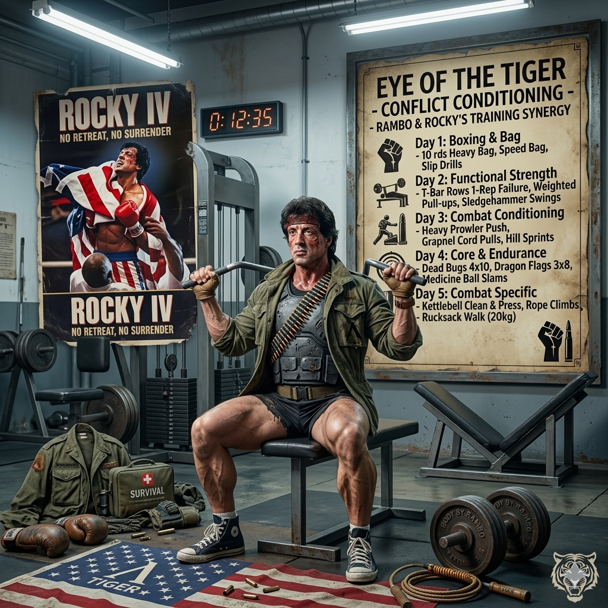
Eye of the Tiger – Sylvester Stallone Inspired
A cinematic and intense 5-day program focusing on boxing, strength, and combat
conditioning.
Weekly Split
- Day 1 – Boxing: Jab-Cross, Heavy Bag
- Day 2 – Strength: Push-Ups, Pull-Ups, Kettlebell Swings
- Day 3 – Conditioning: Battle Rope, Sprints, Plyo Push-Ups
- Day 4 – Core: Plank, Hanging Leg Raises, Mountain Climbers
- Day 5 – Combat: Shadow Boxing, Speed Bag, Agility Ladder
- Special: Max intensity, 1 rest day/week
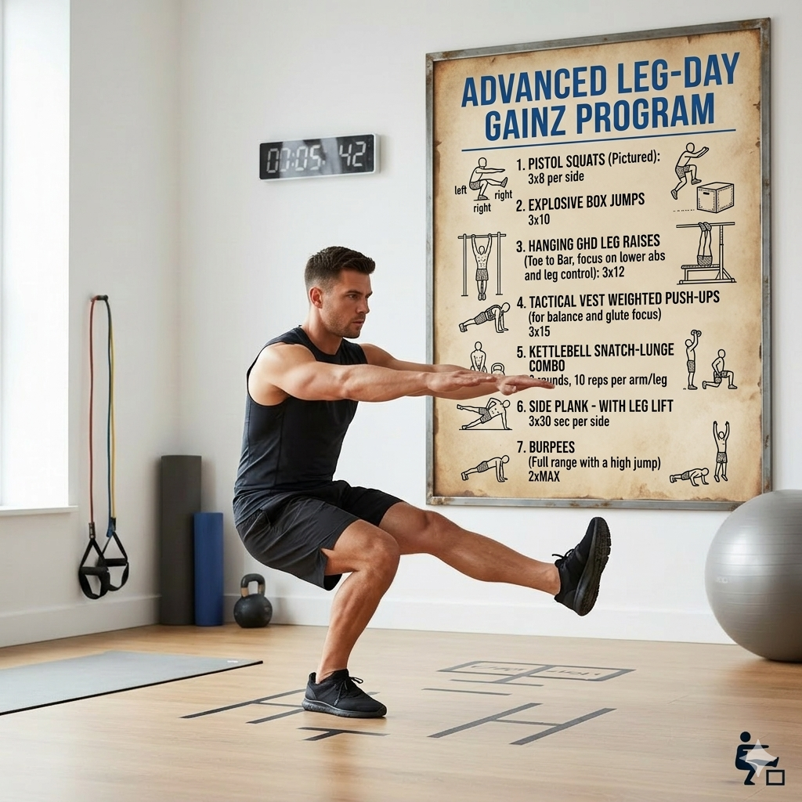
Advanced Leg Day Gainz
Explosive leg & core training for advanced lifters.
Workout
- Pistol Squats — 3×8 per leg
- Explosive Box Jumps — 4×12
- Hanging GHD Leg Raises — 3×15
- Tactical Vest Weighted Push-Ups — 4×12
- Side Plank — 3×30s each side
- Burpees — 3×15
- Special: Perform 2× per week for max gainz
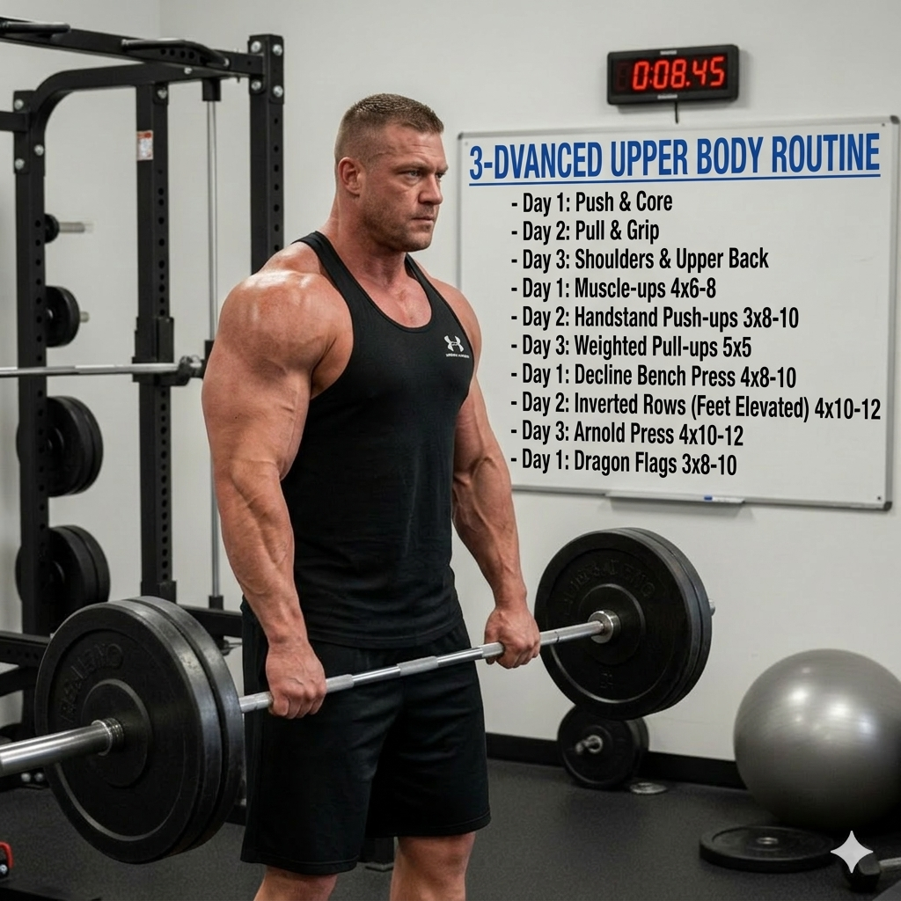
Advanced Upper Body Strength Routine
A powerful 3-day split designed to build upper body strength, explosive power, and
core stability.
3 Day Upper Body Split
- Day 1 – Push & Core: Barbell Bench Press, Weighted Dips, Weighted Hanging Leg Raises
- Day 2 – Pull & Grip: Weighted Pull-Ups, Barbell Rows, Farmer’s Carry
- Day 3 – Shoulders & Upper Back: Barbell Overhead Press, Dumbbell Lateral Raises, Face Pulls
- Special: Train 3× per week with at least one rest day between sessions for recovery.
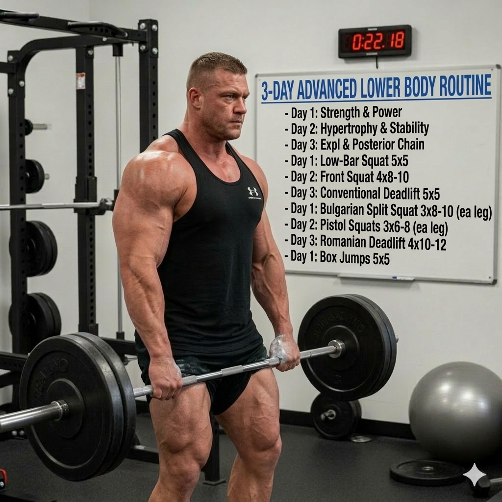
Advanced 3-Day Lower Body Routine
A demanding lower body program focused on strength, muscle growth, and explosive
athletic power.
3 Day Lower Body Split
- Day 1 – Strength & Power: Barbell Back Squats, Heavy Leg Press, Barbell Romanian Deadlifts
- Day 2 – Hypertrophy & Stability: Bulgarian Split Squats, Dumbbell Walking Lunges, Single-Leg Leg Press
- Day 3 – Explosive & Posterior Chain: Barbell Hip Thrusts, Power Cleans, Weighted Box Jumps
- Special: Train 3× per week with at least one recovery day between sessions.
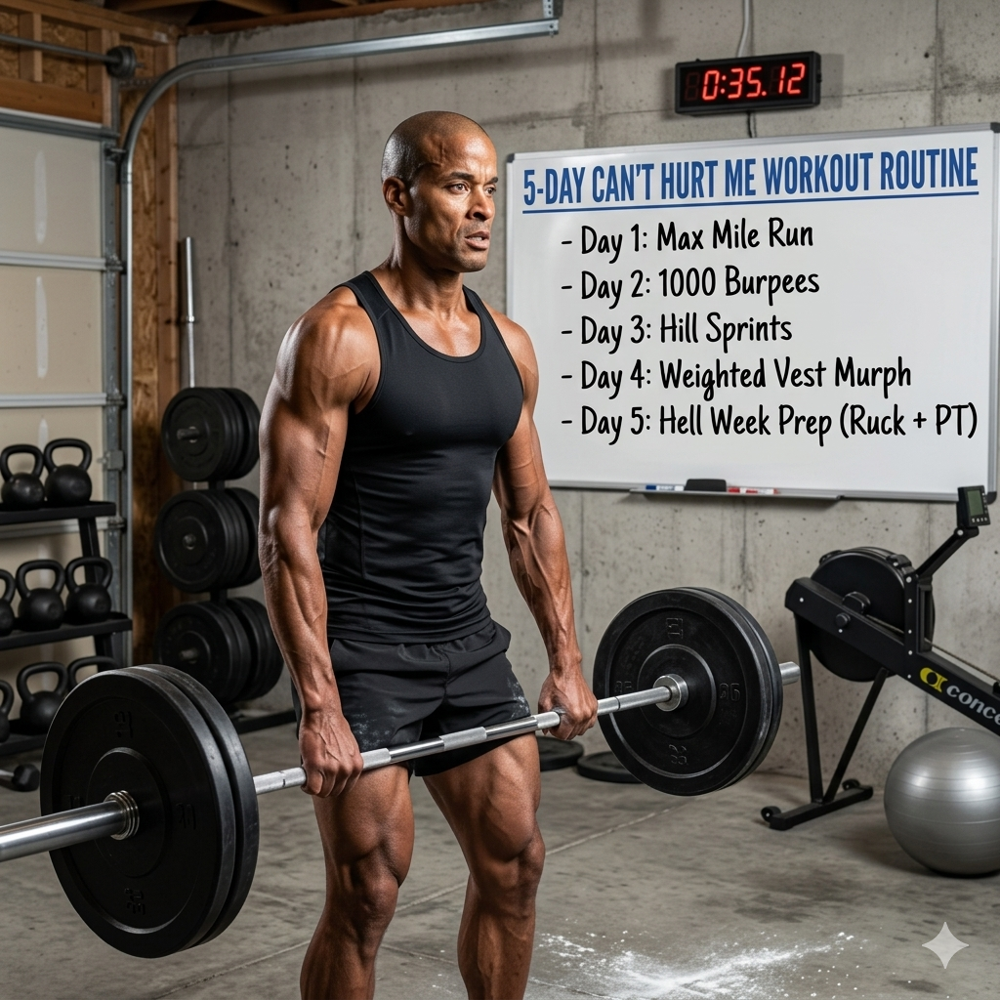
David Goggins – Can't Hurt Me Program
An extreme mental and physical endurance challenge inspired by the mindset of
pushing beyond limits.
5 Day Endurance Challenge
- Day 1: Max Mile Run
- Day 2: 1000 Burpees
- Day 3: Hill Sprints
- Day 4: Weighted Vest Murph
- Day 5: Hell Week Prep (Ruck + PT)
- Special: Train with full effort and allow recovery between sessions.
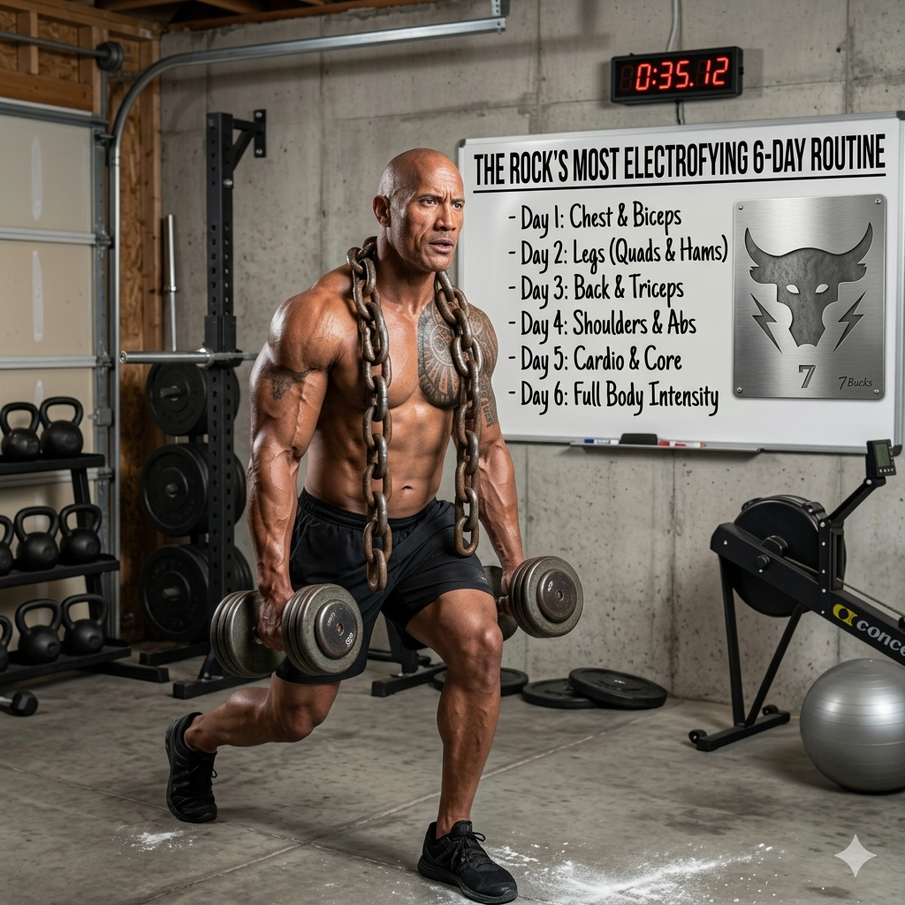
The Rock – Most Electrifying 6 Day Routine
A high-intensity bodybuilding split inspired by Dwayne Johnson’s powerful training
style.
6 Day Training Split
- Day 1 – Chest & Biceps: Barbell Bench Press, Barbell Curls
- Day 2 – Legs: Barbell Squats, Leg Press
- Day 3 – Back & Triceps: Deadlifts, Tricep Pushdowns
- Day 4 – Shoulders & Abs: Overhead Press, Hanging Leg Raises
- Day 5 – Cardio & Core: Sprint Intervals, Weighted Planks
- Day 6 – Full Body Intensity: Power Cleans, Kettlebell Swings
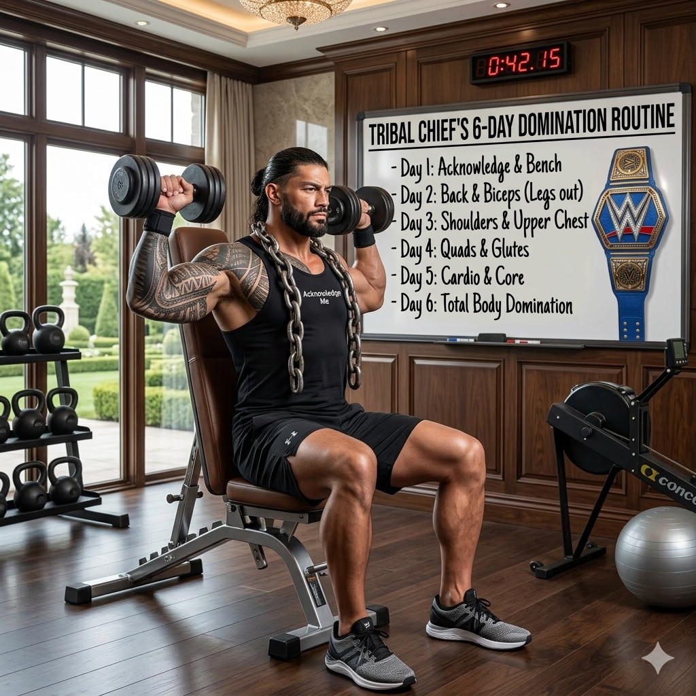
Roman Reigns – Tribal Chief Dominion Routine
A dominant 6-day strength program inspired by the power and presence of the Tribal
Chief.
6 Day Dominion Split
- Day 1 – Acknowledge & Bench: Barbell Bench Press, Weighted Dips
- Day 2 – Back & Biceps: Pull-Ups, Barbell Curls
- Day 3 – Shoulders & Upper Chest: Overhead Press, Incline Dumbbell Press
- Day 4 – Quads & Glutes: Back Squats, Barbell Hip Thrusts
- Day 5 – Cardio & Core: Sprint Intervals, Hanging Leg Raises
- Day 6 – Total Body Domination: Deadlifts
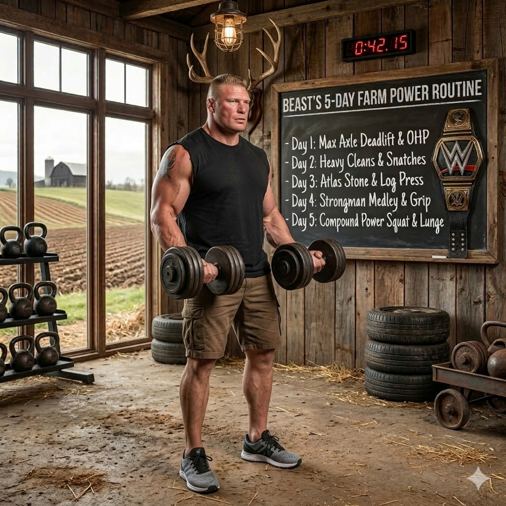
Brock Lesnar – Farm Power Routine
A brutal 5-day strength program inspired by raw farm power and strongman training.
5 Day Power Split
- Day 1: Max Axle Deadlift, Overhead Press
- Day 2: Heavy Cleans, Power Snatches
- Day 3: Atlas Stone Lifts, Heavy Leg Press
- Day 4: Strongman Medley, Farmer’s Carry Grip
- Day 5: Compound Power Cleans, Weighted Lunges
- Special: Focus on maximum power and full recovery.
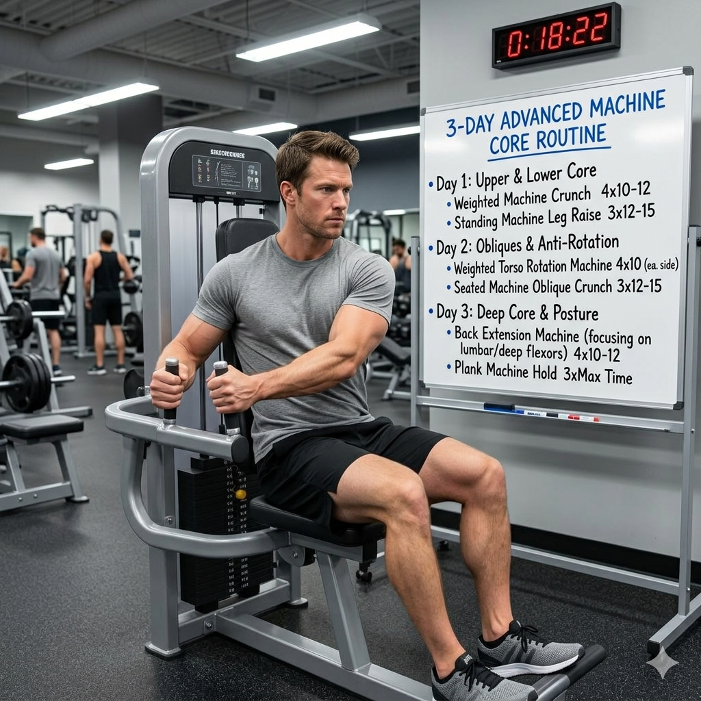
Advanced Machine Core Routine
A focused 3-day core program using resistance machines to build strength, stability,
and control.
3 Day Core Machine Split
- Day 1 – Upper & Lower Core: Machine Ab Crunch, Hanging Leg Raise Machine
- Day 2 – Obliques & Anti-Rotation: Rotary Torso Machine, Cable Pallof Press
- Day 3 – Deep Core & Posture: Captain’s Chair Knee Raises, Back Extension Machine
- Special: Train 3× per week with controlled tempo and core engagement.
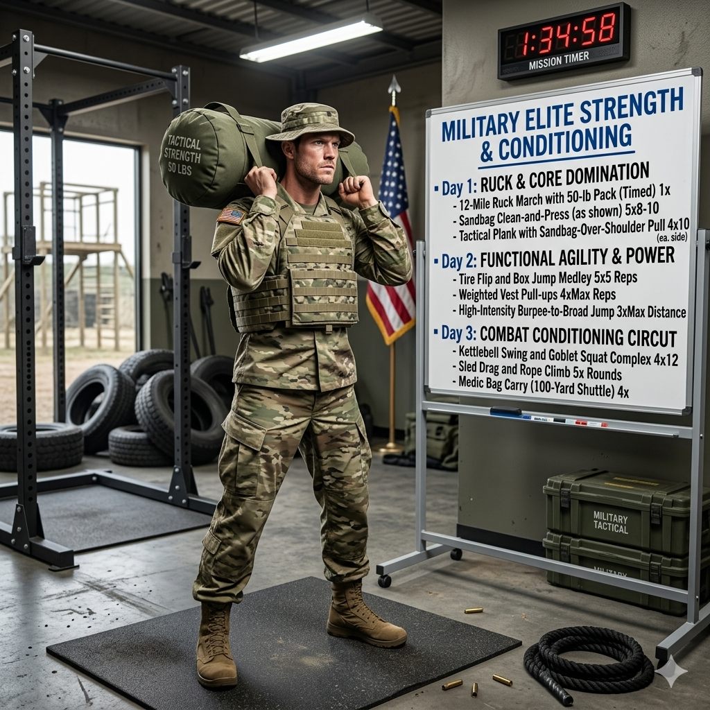
Military Elite Strength & Conditioning
A brutal tactical training routine focused on endurance, power, and battlefield
conditioning.
3 Day Tactical Program
- Day 1 – Ruck & Core Domination: 12 Mile Ruck (50lb Pack), Sandbag Clean & Press
- Day 2 – Functional Agility & Power: Tire Flip, Box Jumps
- Day 3 – Combat Conditioning Circuit: Kettlebell Swings, Medicine Ball Carry
- Special: Focus on endurance, grip strength, and total body resilience.
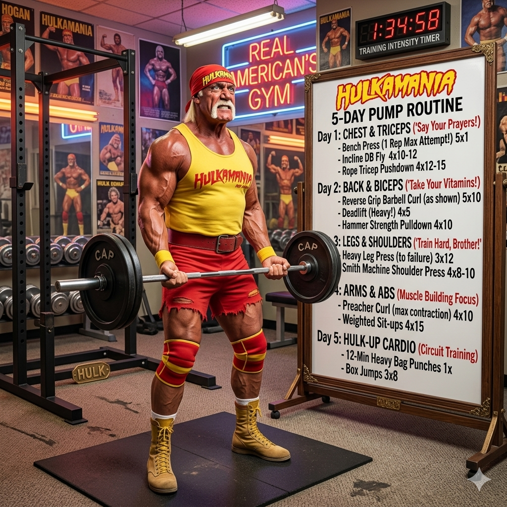
Hulk Hogan – Hulkamania Pump
"Whatcha gonna do, brother, when Hulkamania runs wild on you?"
Classic bodybuilding split for maximum pump and strength.
Focus on intensity, full range of motion, and
achieving the ultimate pump.
5 Day Hulkamania Split
- Day 1 – Chest & Triceps: Barbell Bench Press, Incline Dumbbell Press, Dips
- Day 2 – Back & Biceps: Pull-Ups, Barbell Rows, Dumbbell Curls, Lat Pulldowns
- Day 3 – Legs & Shoulders: Squats, Leg Press, Overhead Press, Lateral Raises
- Day 4 – Arms & Abs: Barbell Curls, Skull Crushers, Hanging Leg Raises
- Day 5 – Hulk Up Cardio: Sprints, Battle Ropes, Jumping Jacks, Burpees
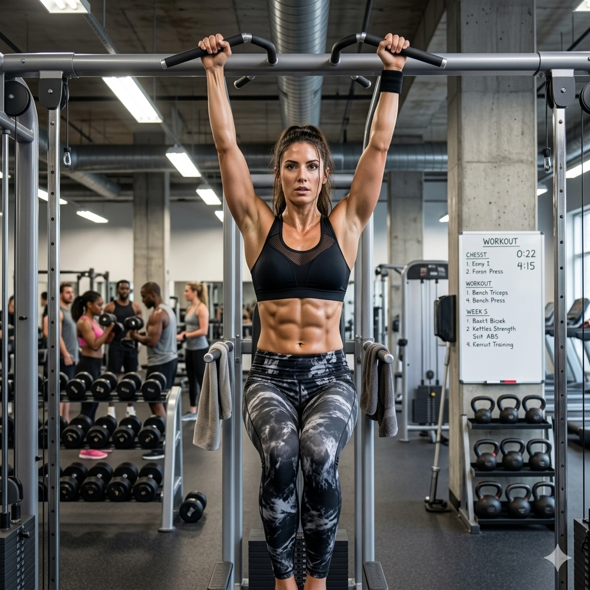
Six-Pack for Women – Intermediate
Focused abs workouts designed for definition and core strength.
Workout Split
- Day 1 – Core & Stability: Plank, Side Plank, Ab Wheel Rollouts, Bicycle Crunches
- Day 2 – Core & Strength: Hanging Leg Raises, Weighted Decline Crunches, Russian Twists, Mountain Climbers
- Special: Start with 2–3 sets per exercise. Gradually increase sets or reps each week by 1–2, while maintaining proper form. Change or rotate exercises every 6–8 weeks to avoid plateaus and continuously challenge your core.
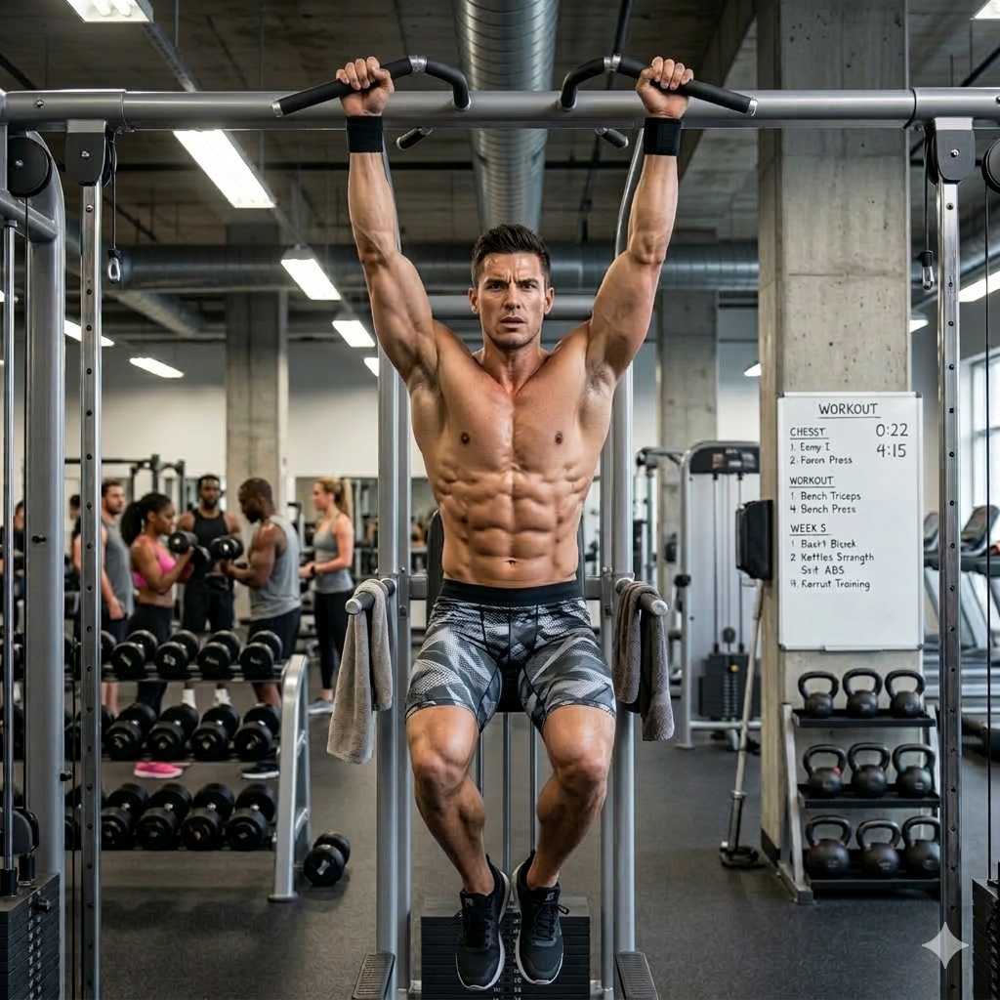
Six-Pack for Men – Intermediate
Focused abs workouts for a strong, defined core.
Workout Split
- Day 1 – Core & Stability: Plank, Side Plank, Hanging Knee Raises, Cable Crunches
- Day 2 – Core & Strength: Hanging Leg Raises, Weighted Decline Sit-Ups, Russian Twists, Mountain Climbers
- Special: Start with 2–3 sets per exercise. Gradually increase sets or reps each week by 1–2, while maintaining proper form. Change or rotate exercises every 6–8 weeks to avoid plateaus and continuously challenge your core.
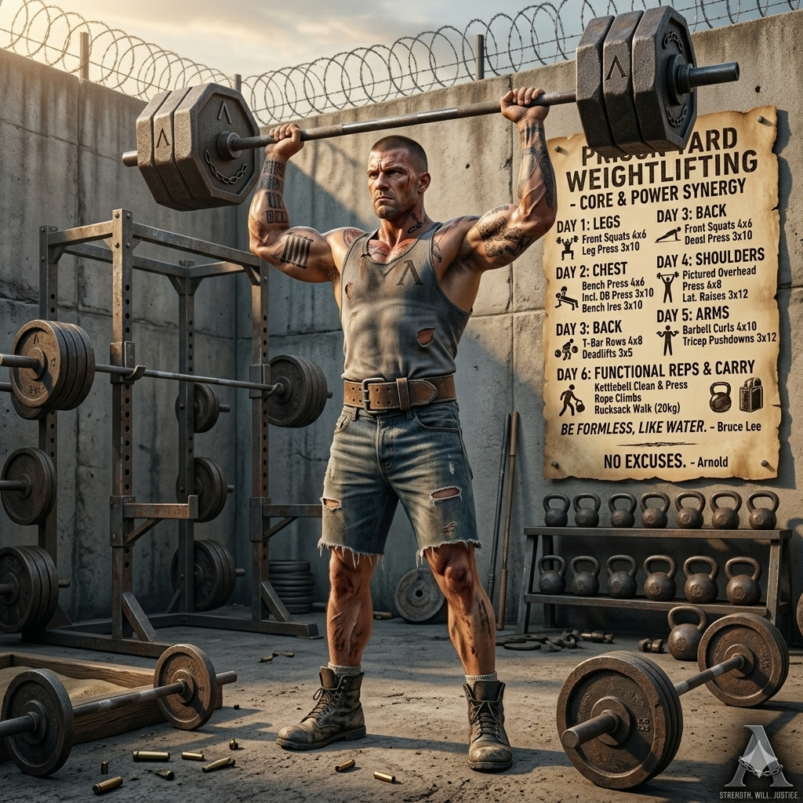
Prison Yard Weightlifting
Hard-hitting 6-day routine inspired by bodyweight and barbell training in the yard.
Special: Start with moderate sets and reps. Increase
progressively each week. Rotate or swap exercises every 6–8 weeks to avoid
plateaus.
Workout Split
- Day 1 – Legs: Squats, Lunges, Leg Press
- Day 2 – Chest: Bench Press, Incline Press, Dips
- Day 3 – Back: Pull-Ups, Barbell Rows, Lat Pulldowns
- Day 4 – Shoulders: Overhead Press, Lateral Raises, Shrugs
- Day 5 – Arms: Barbell Curls, Tricep Extensions, Hammer Curls
- Day 6 – Functional Press & Carry: Farmer Carries, Sandbag Press, Weighted Vest Push-Ups
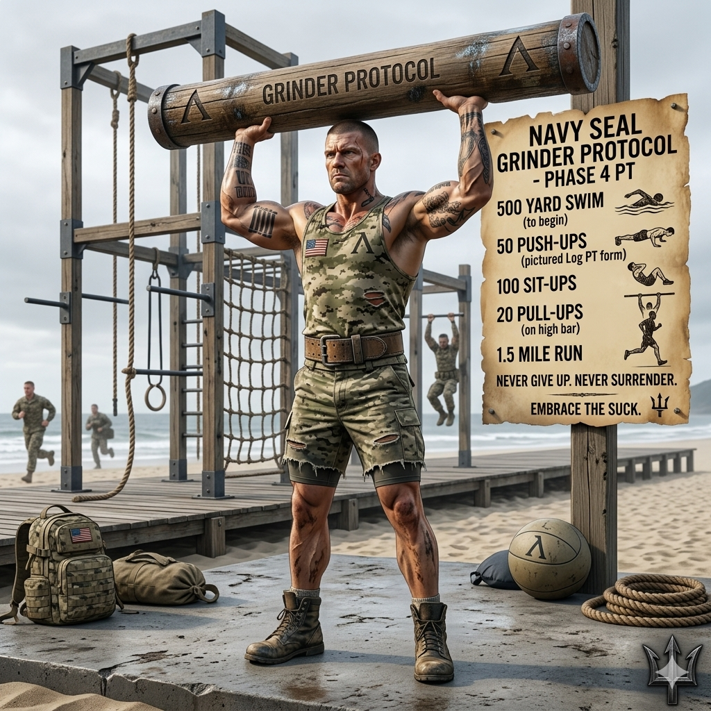
Navy SEAL Grinder Protocol – Phase 4 PT
Only for the absolutely strong and confident. Extreme full-body conditioning.
Phase 4 Workout
- 500-yard Swim
- 50 Push-Ups
- 100 Sit-Ups
- 200 Pull-Ups
- 1.5 Mile Run
- Special: This is designed for elite strength and conditioning. Start conservatively, increase repetitions/sets gradually, and ensure full recovery between sessions. Only attempt if you are fully prepared for extreme intensity.
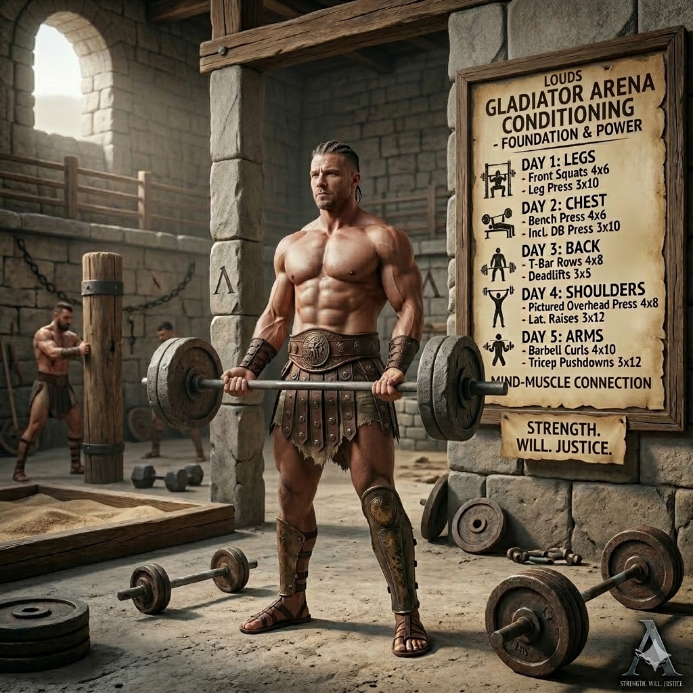
Gladiator Arena Conditioning – Beginner
Start your journey to arena-ready strength. Focus on proper form and consistency.
5-Day Routine
- Day 1 – Legs: Bodyweight Squats, Lunges
- Day 2 – Chest: Knee Push-Ups, Incline Push-Ups, Chest Press with Light Weights
- Day 3 – Back: Resistance Band Rows, Supermans
- Day 4 – Shoulders: Shoulder Press with Light Weights, Lateral Raises, Front Raises
- Day 5 – Arms: Bicep Curls, Tricep Dips (bench)
- Special: Perform 2–3 sets of 10–15 reps. Focus on form first. Gradually increase reps/sets weekly. Switch exercises after 4–6 weeks to challenge muscles differently.

Cory Everson – Everson's gym – 5-Day Split
Legendary 6-time Ms. Olympia. Intermediate full-body program for strength, tone, and
symmetry.
5-Day Split
- Day 1 – Legs: Squats, Lunges, Leg Press
- Day 2 – Push: Bench Press, Overhead Press, Dumbbell Flyes
- Day 3 – Hams & Back: Romanian Deadlift, Seated Cable Row, Lat Pulldown
- Day 4 – Legs: Bulgarian Split Squats, Leg Extensions, Hamstring Curls
- Day 5 – Delts & Arms: Lateral Raises, Bicep Curls, Tricep Pushdowns
- Special: Gradually increase reps or weight weekly.

Viking Warrior Conditioning
Train like a Norse warrior ⚔️. Intermediate full-body strength & endurance split.
5-Day Split
- Day 1 – Legs: Squats, Deadlifts, Lunges
- Day 2 – Chest: Bench Press, Push-Ups, Dumbbell Flyes
- Day 3 – Back: Pull-Ups, Rows, Lat Pulldowns
- Day 4 – Shoulders: Overhead Press, Lateral Raises, Face Pulls
- Day 5 – Arms: Bicep Curls, Tricep Extensions, Hammer Curls
- Special: Increase weight or reps progressively each week.

Intermediate Back Routine
Build a stronger, wider back. Focused power, thickness, and endurance.
2-Day Split
- Day 1 – Power & Thickness: Barbell Rows, Pull-Ups, Deadlifts
- Day 2 – Endurance & Definition: Lat Pulldowns, Seated Cable Rows, Rack Pulls
- Special: Increase sets/reps gradually each week. Switch exercises every 6–8 weeks to avoid plateaus.

Intermediate Chest Routine
Build strength, size, and definition for a powerful chest.
2-Day Split
- Day 1 – Power & Strength: Barbell Bench Press, Incline Dumbbell Press, Weighted Dips
- Day 2 – Endurance & Definition: Dumbbell Flyes, Push-Ups, Cable Crossovers
- Special: Gradually increase sets/reps each week. Rotate exercises every 6–8 weeks to avoid plateaus.

Intermediate Leg Routine
Build strength, power, and endurance in your lower body.
2-Day Split
- Day 1 – Strength & Power: Barbell Back Squat, Deadlift, Bulgarian Split Squat
- Day 2 – Hypertrophy & Endurance: Leg Press, Lunges, Leg Extensions
- Special: Increase sets/reps weekly. Change exercises every 6–8 weeks to avoid plateaus.